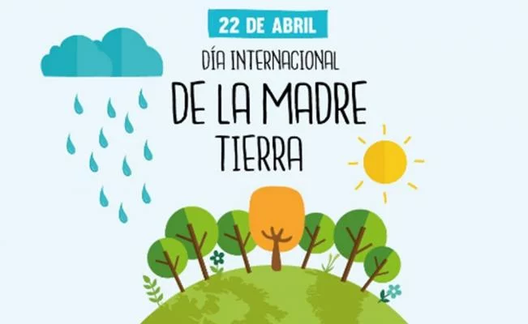
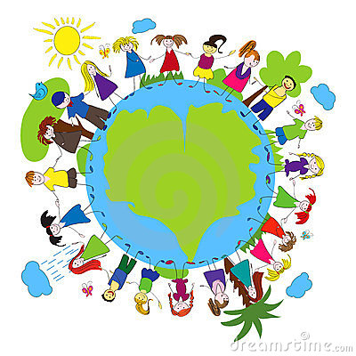
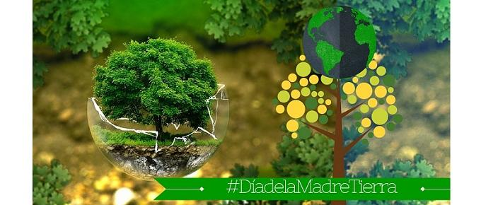
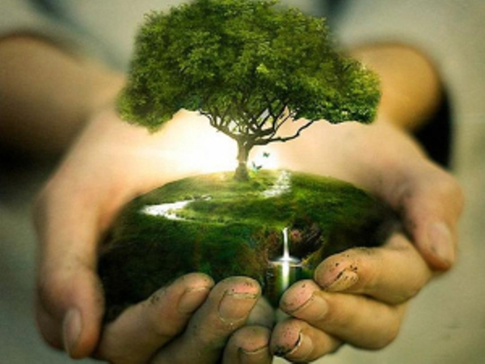
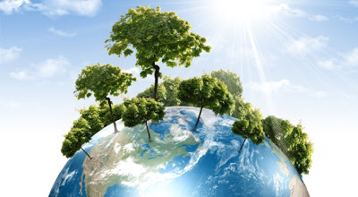
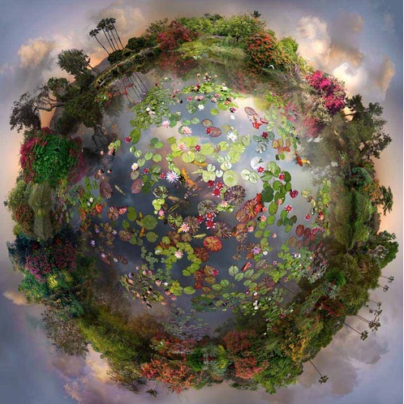
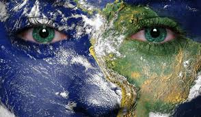
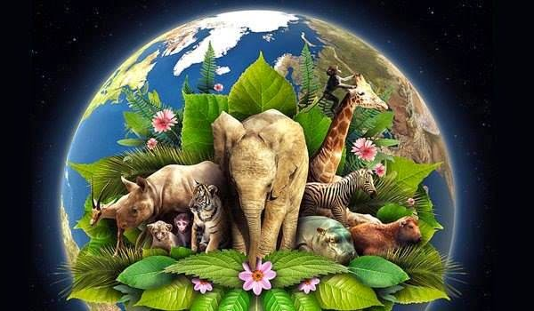
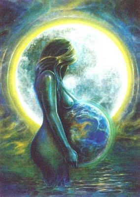
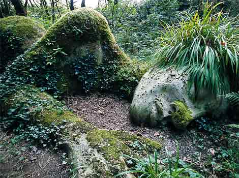

Dia Internacional de la Madre Tierra 22 de abril
- 

- 

- 
- 
- 
- 
Realizado por:
Francisco Javier Hernandez Rodriguez
4° "F"
Especialidad:
Programación
Submodulo:
Desarrolla Aplicaciones Móviles
Docente:
Lic.José Antonio Gómez Hernández
4° "F"
Programación
Desarrolla Aplicaciones Móviles
Lic.José Antonio Gómez Hernández
Celebramos el dia Internacional de la Madre Tierra para recordar que el planeta y sus ecosistemas nos dan la vida y el sustento. Con este dia, asumimos, ademas, la responsabilidad colectiva, como nos recordaba la Declaracion de Rio de 1992, de fomentar esta armonia con la naturaleza y la Madre Tierra. Este dia nos brinda tambien la oprtunidad de concienciar a todos los habitantes del planeta acerca de los problemas que afectan a la Tierra y a las diferentes formas de vida que en él se desarrollan.

El Día de la Tierra es un día festivo celebrado en muchos países el 22 de abril. Su promotor, el senador estadounidense Gaylord Nelson, instauró este día para crear una conciencia común a los problemas de la contaminación, la conservación de la biodiversidad y otras preocupaciones ambientales para proteger la Tierra. La primera manifestación tuvo lugar el 22 de abril de 1970, promovida por el senador y activista ambiental Gaylord Nelson, para la creación de una agencia ambiental. En esta convocatoria participaron dos mil universidades, diez mil escuelas primarias y secundarias y centenares de comunidades. La presión social tuvo sus logros y el gobierno de los Estados Unidos creó la Environmental Protection Agency (Agencia de Protección Ambiental) y una serie de leyes destinada a la protección del medio ambiente. En 1972 se celebró la primera conferencia internacional sobre el medio ambiente: la Conferencia de Estocolmo, cuyo objetivo fue sensibilizar a los líderes mundiales sobre la magnitud de los problemas ambientales y que se instituyeran las políticas necesarias para erradicarlos. Las Naciones Unidas celebran el día de la Tierra cada año en el equinoccio vernal (alrededor del 21 de marzo). El 26 de febrero de 1971, el secretario general U Thant firmó una proclamación a ese efecto. Al momento del equinoccio suena la Campana de la Paz en la sede central de la ONU en Nueva York El Día de la Tierra es una fiesta que pertenece a la gente y no está regulada por una sola entidad u organismo; tampoco está relacionado con reivindicaciones políticas, nacionales, religiosas, ideológicas ni raciales. En el Día de la Tierra se reflexiona sobre la importancia del vital líquido que es indispensable para la vida del ser humano como lo que es el agua ya que de toda el agua que existe en el planeta tan solo en 2% es bebible. El Día de la Tierra apunta a la toma de conciencia de los recursos naturales de la Tierra y su manejo, a la educación ambiental, y a la participación como ciudadanos ambientalmente conscientes y responsables. En el Día de la Tierra todos estamos invitados a participar en actividades que promuevan la salud de nuestro planeta, tanto a nivel global como regional y local. "La Tierra es nuestro hogar y el hogar de todos los seres vivos. La Tierra misma está viva. Somos partes de un universo en evolución. Somos miembros de una comunidad de vida interdependiente con una magnificente diversidad de formas de vida y culturas. Nos sentimos humildes ante la belleza de la Tierra y compartimos una reverencia por la vida y las fuentes de nuestro ser..." 
El domingo pasado 22 de abril se celebró el Día Internacional de la Madre Tierra, desde la CEDU participamos a través de la difusión y compromiso en la búsqueda de un justo equilibro entre las necesidades económicas, sociales y ambientales de las generaciones presentes y futuras, promoviendo una cultura armónica con la naturaleza y Madre Tierra.
«Madre Tierra» es una expresión común utilizada para referirse al Planeta Tierra en diversos países y regiones, lo que demuestra la interdependencia existente entre los seres humanos, las demás especies vivas y el planeta que todos habitamos.
La Tierra y sus ecosistemas son nuestro hogar. Para alcanzar un justo equilibrio entre las necesidades económicas, sociales y ambientales de las generaciones presentes y futuras, es necesario promover la armonía con la naturaleza y el planeta.
Celebramos el Día Internacional de la Madre Tierra para recordar que el planeta y sus ecosistemas nos dan la vida y el sustento. Con este día, asumimos, además, la responsabilidad colectiva, como nos recordaba la Declaración de Río de 1992, de fomentar esta armonía con la naturaleza y la Madre Tierra.
Este día nos brinda también la oportunidad de concienciar a todos los habitantes del planeta acerca de los problemas que afectan a la Tierra y a las diferentes formas de vida que en él se desarrollan.

La ONU informó que este año se celebrará el octavo Diálogo sobre armonía con la naturaleza, el día 23 de abril en la Sede de la ONU de Nueva York. Este diálogo interactivo es una buena plataforma para tratar temas como la producción sostenible y los patrones de consumo en la Armonía con la naturaleza. Asimismo, el diálogo quiere fomentar que los ciudadanos y las sociedades se conciencien sobre cómo se relacionan y cómo pueden relacionarse con el mundo natural; al mismo tiempo, pretende mejorar los cimientos éticos de la relación entre la humanidad y la Tierra, en términos de desarrollo sostenible.

La Asamblea General designa en su resolución A/RES/63/278 el 22 de abril como el Día Internacional de la Madre Tierra, teniendo en cuenta que en muchos países se celebra el día de la Tierra, y con el objetivo de alcanzar un justo equilibrio entre las necesidades económicas, las sociales y las ambientales de las generaciones presentes y futuras, y para promover la armonía con la naturaleza y la Tierra.
Invita a todos los Estados Miembros, las organizaciones del sistema de las Naciones Unidas, las organizaciones internacionales, regionales y subregionales, la sociedad civil, las organizaciones no gubernamentales y las partes interesadas a observar el Día Internacional de la Madre Tierra y crear conciencia al respecto, según proceda.
La Conferencia de las Naciones Unidas sobre el Medio Humano de 1972 celebrada en Estocolmo sentó las bases de la toma de conciencia mundial sobre la relación de interdependencia entre los seres humanos, otros seres vivos y nuestro planeta. Asimismo, se estableció el 5 de junio como el Día Mundial del Medio Ambiente y se creó el Programa de las Naciones Unidas para el Medio Ambiente (PNUMA), la agencia de la ONU encargada de establecer la agenda ambiental a nivel global, promover la implementación coherente de la dimensión ambiental del desarrollo sostenible en el sistema de las Naciones Unidas y actuar como un defensor autorizado del medio ambiente.
En 1992, más de 178 países firmaron la Agenda 21, la Declaración de Río sobre el Medio Ambiente y el Desarrollo, y la Declaración de Principios para la Gestión Sostenible de los Bosques en la Conferencia de Naciones Unidas sobre el Medio Ambiente y el Desarrollo (UNCED), que tuvo lugar en Río de Janeiro (Brasil) del 3 y el 14 de junio de 1992.
En el año 2005, la Asamblea General declaró 2008 como el Año Internacional del Planeta Tierra para promover la enseñanza de las ciencias de la Tierra para facilitar a la humanidad los instrumentos necesarios para el uso sostenible de los recursos naturales y para construir la infraestructura científica esencial para el desarrollo sostenible.
En 2012 se celebró la Conferencia de las Naciones Unidas sobre el Desarrollo Sostenible, también conocida como Rio+20. Como resultado, se elaboró un documento que contenía medidas y prácticas para implementar un desarrollo sostenible. Además, en Río, los Estados Miembros decidieron emprender un proceso para establecer los Objetivos de Desarrollo Sostenible (ODS), que se basarían en los Objetivos de Desarrollo del Milenio y coincidirían con la Agenda para el desarrollo después de 2015.
